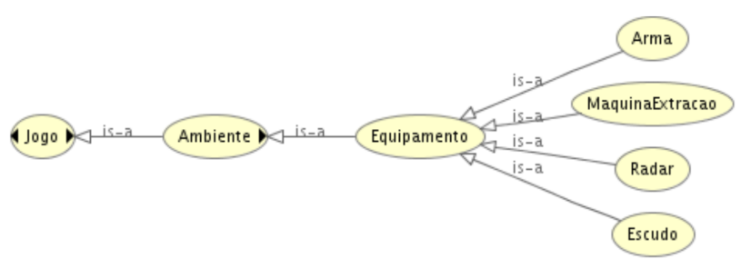
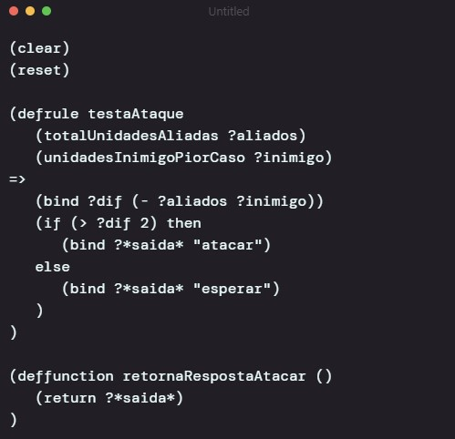
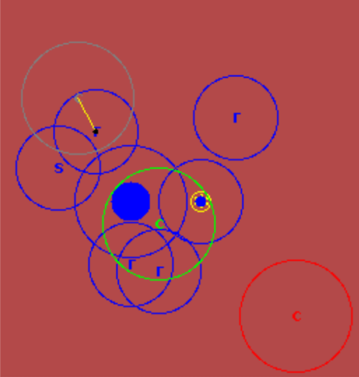
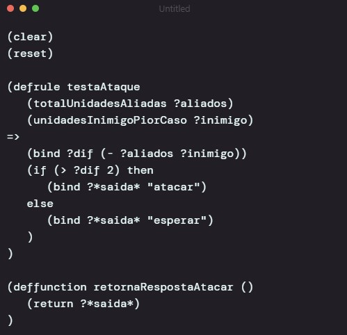
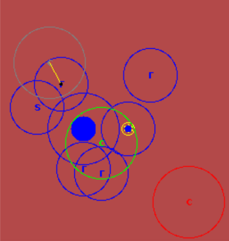
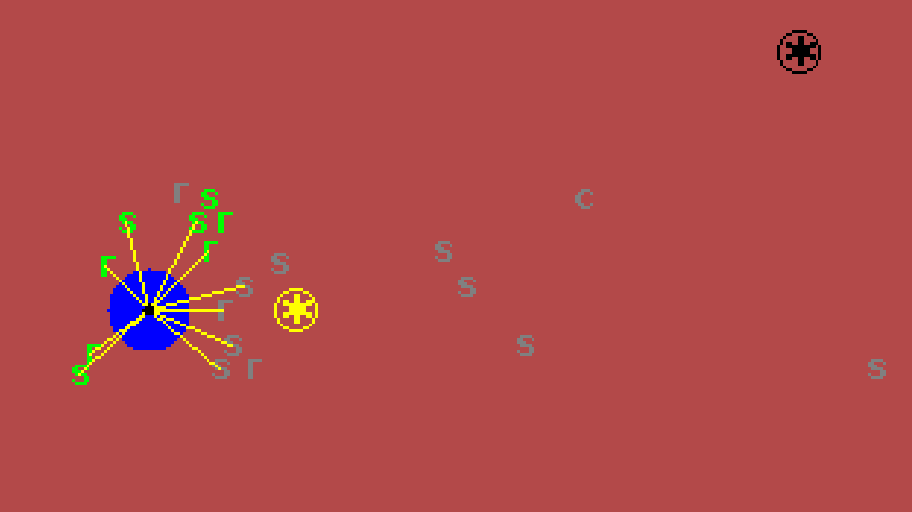

Introdução
O trabalho aborda a aplicação de Sistemas Multiagentes (SMA) e conceitos de inteligência artificial no desenvolvimento de um jogo de estratégia simulado chamado Titan. O objetivo é criar jogos mais realistas e detalhados, com inteligência mais crível, utilizando características de agentes como autonomia, proatividade e interação social. Além dos agentes, foram empregados conceitos de organização, ambiente, reputação, sistemas especialistas e ontologias. O jogo simula o comportamento de um jogador humano, onde times autônomos buscam recursos, organizam defesa e ataque, e negociam entre si, sem intervenção humana direta após a configuração inicial.
Métodos
O estudo aplicou conceitos de Sistemas Multiagentes (SMA) na elaboração de um jogo de estratégia simulado, seguindo uma abordagem em três etapas principais:
1. Modelagem do Ambiente
- CArtAgO: utilizado para criar o ambiente do jogo, com artefatos que oferecem operações
como join, goTo, extractResource e attackAgent.
- Ontologia (Protégé + Hermit): definição de conceitos e papéis (ex.: capitão, soldado,
etc.), permitindo raciocínio sobre restrições e relações.

- Organização MOISE: estrutura funcional e normativa (grupos, papéis, metas e missões)
para
guiar o comportamento coletivo.
2. Modelagem dos Agentes
- JADE: implementação de agentes reativos responsáveis por tarefas básicas.
- Jason: implementação de agentes BDI (crenças, desejos e intenções) para tomada de
decisão
estratégica.
- Comunicação: uso de mensagens (FIPA-ACL no JADE e KQML no Jason) e
Blackboard
para compartilhamento global de informações.
- Negociação entre Capitães: protocolo dividido em quatro fases (Início, Inventário,
Definição, Ataque) para coordenar estratégias de combate.
- Sistema de Reputação: avaliação de confiabilidade dos parceiros com base em
interações
anteriores (pontuação +1 ou -1).
- Campo de visão: método usado pelos agentes para perceber os elementos
do ambiente dentro de uma certa distância de onde ele está.
3. Apoio à Tomada de Decisão
- Sistemas Especialistas (Jess): motor de regras para auxiliar capitães a decidir
iniciar
ataques, considerando fatores como diferença de unidades.

- Interface Gráfica: visualização do jogo (times, campos de visão, tiros e poços) e
controle de desempenho com múltiplas threads.

- Otimizações de Integração: redução do número de mensagens, uso de artefatos únicos
no
ambiente e integração JADE ↔ CArtAgO.
- JADE: implementação de agentes reativos responsáveis por tarefas básicas.
- Jason: implementação de agentes BDI (crenças, desejos e intenções) para tomada de decisão estratégica.
- Comunicação: uso de mensagens (FIPA-ACL no JADE e KQML no Jason) e Blackboard para compartilhamento global de informações.
- Negociação entre Capitães: protocolo dividido em quatro fases (Início, Inventário, Definição, Ataque) para coordenar estratégias de combate.
- Sistema de Reputação: avaliação de confiabilidade dos parceiros com base em interações anteriores (pontuação +1 ou -1).
- Campo de visão: método usado pelos agentes para perceber os elementos do ambiente dentro de uma certa distância de onde ele está.
3. Apoio à Tomada de Decisão
- Sistemas Especialistas (Jess): motor de regras para auxiliar capitães a decidir
iniciar
ataques, considerando fatores como diferença de unidades.

- Interface Gráfica: visualização do jogo (times, campos de visão, tiros e poços) e
controle de desempenho com múltiplas threads.

- Otimizações de Integração: redução do número de mensagens, uso de artefatos únicos
no
ambiente e integração JADE ↔ CArtAgO.
Glossário
- SMA (Sistemas Multiagentes): Sistemas compostos por múltiplos agentes autônomos que interagem entre si para atingir objetivos.
- Agente Reativo: Agente que reage a estímulos do ambiente sem manter um modelo interno complexo.
- Agente BDI (Belief-Desire-Intention): Arquitetura de agente que modela o comportamento com base em suas crenças sobre o ambiente, seus desejos (estados a serem alcançados) e suas intenções (planos para atingir desejos).
- JADE (Java Agent Development Framework): Plataforma para desenvolvimento de agentes em Java, focada em comunicação.
- Jason: Linguagem de programação para agentes BDI baseada em AgentSpeak.
- CArtAgO: Infraestrutura para engenharia de ambientes computacionais em sistemas multiagentes.
- Blackboard: Estrutura de dados compartilhada onde agentes podem ler e escrever informações.
- KQML/FIPA-ACL: Linguagem externa para comunicação entre agentes, definindo formato de envelope de mensagens.
- Moise: Modelo organizacional para a concepção de sistemas multiagentes.
- Sistema Especialista (SE): Sistema que emula a habilidade de decisão de um especialista humano em um domínio específico.
- Ontologia: Descrição dos conceitos de um domínio de conhecimento e suas relações.
Resultados
Principais Achados
- Comportamento Realista: o jogo Titan aproximou as ações dos agentes ao comportamento de um jogador humano.
- Estratégias Diferenciadas: cada time utilizou Sistemas Especialistas próprios, resultando em decisões distintas e maior interesse no jogo.
- Ambiente CArtAgO: facilitou a separação entre agentes e demais objetos do sistema.
- Jason: mostrou-se adequado para agentes BDI e tomada de decisão estratégica.
- JADE: útil para comunicação, mas com limitações em relação à arquitetura BDI.
- Moise: eficiente na organização e controle de agentes, apesar de restrições.
- Ontologia + Hermit: permitiu verificar papéis disponíveis e unidades em tempo de execução.
- Sistema de Reputação: reduziu o número de mensagens trocadas, tornando negociações mais rápidas e eficientes.
Impacto Geral
As técnicas de Inteligência Artificial aplicadas tornaram o jogo mais crível, com negociações e ataques mais realistas. A combinação de diferentes ferramentas (Jason, JADE, Moise, CArtAgO e Ontologias) mostrou-se eficaz para desenvolver um sistema multiagente de estratégia.
Discussão
Desafios Encontrados
- Lentidão no CArtAgO: causada por múltiplos agentes → resolvida com otimização da interface gráfica e ajustes na ferramenta.
- Integração JADE ↔ CArtAgO: exigiu a criação de uma representação do agente JADE no ambiente.
- Limitações de Concorrência no JADE: solução encontrada foi reduzir o número de mensagens trocadas.
- Moise: dificuldade em remover agentes de missões obrigatórias → solução: permitir número indefinido de agentes nos papéis.
Contribuições para as Ferramentas
- Correção de problema na lista de eventos pendentes do CArtAgO.
- Sugestão de metas do tipo maintenance para o Moise.
Trabalhos Futuros
- Inserir novos recursos no jogo.
- Avaliar desempenho e escalabilidade → incluindo execução distribuída.
- Desenvolver novos tipos de agentes e artefatos.
- Permitir interação humana controlando um dos times.
Referências do Artigo
- [1] Felipe Carvalho. Comportamento em grupo de personagens do tipo black&white, 2004.
- [2] Stefan J. Johansson. On using multi-agent systems in playing board games. In Proceedings of the fifth international joint conference on Autonomous agents and multiagent systems, AAMAS '06, pages 569-576, New York, NY, USA, 2006. ACM.
- [3] Priscilla F. de Abreu, Vera Maria B. Werneck, Rosa Maria E. Moreira da Costa, and Luis Alfredo V. de Carvalho. Employing multi-agents in 3-d game for cognitive stimulation. In Proceedings of the 2011 XIII Symposium on Virtual Reality, SVR '11, pages 73-78, Washington, DC, USA, 2011. IEEE Computer Society.
- [4] Sung-Wook Park, Jung-Han Kim, Eun-Hee Kim, and Jun-Ho Oh. Development of a multi-agent system for robot soccer game. In Robotics and Automation, 1997. Proceedings., 1997 IEEE International Conference on, volume 1, pages 626-631 vol.1, apr 1997.
- [5] Henric Fransson. Agentchess - an agent chess approach, 2003.
- [6] Fredrik Haard. Multi-agent diplomacy, 2004.
- [7] Fredrik Olsson. A multi-agent system for playing the board game risk, 2005.
- [8] Johan Hagelbäck and Stefan J. Johansson. Using multi-agent potential fields in real-time strategy games. In Proceedings of the 7th international joint conference on Autonomous agents and multiagent systems - Volume 2, AAMAS '08, pages 631-638, Richland, SC, 2008. International Foundation for Autonomous Agents and Multiagent Systems.
- [9] Antonio Barella, Carlos Carrascosa, and Vicente Botti. Jgomas: game-oriented multi-agent system based on jade. In Proceedings of the 2006 ACM SIGCHI international conference on Advances in computer entertainment technology, ACE '06, New York, NY, USA, 2006. ACM.
- [10] Chek Tien Tan and Ho-lun Cheng. A combined tactical and strategic hierarchical learning framework in multi-agent games. In Proceedings of the 2008 ACM SIGGRAPH symposium on Video games, Sandbox '08, pages 115-122, New York, NY, USA, 2008. ACM.
- [11] H. Fujita, Y. Matsuno, and S. Ishii. A reinforcement learning scheme for a multi-agent card game. In Systems, Man and Cybernetics, 2003. IEEE International Conference on, volume 5, pages 4071-4078 vol.5, oct. 2003.
- [12] R. Neves, L.P. Reis, P. Abreu, and B.M. Faria. A multi-agent system to help farmville players on game management tasks. In Information Systems and Technologies (CISTI), 2012 7th Iberian Conference on, pages 1-6, june 2012.
- [13] David M. Bourg and Glenn Seeman. Al for game developers. O'Reilly, 2004.
- [14] Ian Millington and John Funge. Artificial intelligence for games. Morgan Kaufmann Publishers Inc., San Francisco, CA, USA, 2nd edition, 2009.
- [15] David Vickrey and Daphne Koller. Multi-agent algorithms for solving graphical games. In Eighteenth national conference on Artificial intelligence, pages 345-351, Menlo Park, CA, USA, 2002. American Association for Artificial Intelligence.
- [16] Zhisheng Huang, Anton Eliëns, and Cees Visser. 3d agent-based virtual communities. In Proceedings of the seventh international conference on 3D Web technology, Web3D '02, pages 137-143, New York, NY, USA, 2002. ACM.
- [17] Tingting Wang and Jiming Liu. Evaluating the minority game strategy in agent role assignments. In Proceedings of the fourth international joint conference on Autonomous agents and multiagent systems, AAMAS '05, pages 1347-1348, New York, NY, USA, 2005. ACM.
- [18] P. J. 't Hoen, S. M. Bohte, and J. A. La Poutré. Learning from induced changes in opponent (re)actions in multi-agent games. In Proceedings of the fifth international joint conference on Autonomous agents and multiagent systems, AAMAS '06, pages 728-735, New York, NY, USA, 2006. ACM.
- [19] Z. Kobti and S. Sharma. A multi-agent architecture for game playing. In Computational Intelligence and Games, 2007. CIG 2007. IEEE Symposium on, pages 276-281, april 2007.
- [20] Eric Raboin, Ugur Kuter, and Dana Nau. Generating strategies for multi-agent pursuit-evasion games in partially observable euclidean space. In Proceedings of the 11th International Conference on Autonomous Agents and Multiagent Systems - Volume 3, AAMAS '12, pages 1201-1202, Richland, SC, 2012. International Foundation for Autonomous Agents and Multiagent Systems.
- [21] Italia Telecom. Jade java agent development framework. Disponível em http://jade.tilab.com/, 2011.
- [22] Rafael H. Bordini, Jomi F. Hübner, and Michael Wooldridge. Programming Multi-Agent Systems in AgentSpeak using Jason (Wiley Series in Agent Technology). John Wiley & Sons, 2007.
- [23] Yves Demazeau. From interactions to collective behaviour in agent-based systems. In In: Proceedings of the Ist. European Conference on Cognitive Science. Saint-Malo, pages 117-132, 1995.
- [24] Michael Wooldridge. An Introduction to MultiAgent Systems. Wiley, 2nd edition, July 2009.
- [25] A. Ricci, M. Viroli, and A. Omicini. CArtAgO: An infrastructure for engineering computational environments in MAS. In Danny Weyns, H. Van Dyke Parunak, and Fabien Michel, editors, 3rd International Workshop "Environments for Multi-Agent Systems" (E4MAS 2006), pages 102-119, AAMAS 2006, Hakodate, Japan, 2006.
- [26] A. Ricci, M. Piunti, M. Viroli, and A. Omicini. Environment programming in cartago. In Multi-Agent Programming II: Languages, Platforms and Applications, Multiagent Systems, Artificial Societies, and Simulated Organizations. Springer, 2009.
- [27] F. Gers. Multi-agent system for distributed data fusion in peer-to-peer environment. PhD thesis, University of Jyväskylä, 2002.
- [28] M. Hannoun, O. Boissier, J. S. Sichman, and C. Sayettat. Moise: Un modèle organisationnel pour la conception de systèmes multi-agents. In Acts des 7èmes Journèes Francophones Intelligence Artificielle Distribuee & Systèmes Multi-Agents, pages 105-118. Hermès Science Publications, 1999.
- [29] Jomi Fred Hubner. Um Modelo de Reorganização de Sistemas Multiagentes. PhD thesis, Escola Politécnica da Universidade de São Paulo, 2003.
- [30] D. B. Bromley. Reputation, Image and Impression Management. John Wiley & Sons, April 1993.
- [31] E.H. Shortliffe. Computer-based medical consultations: MYCIN, volume 388. Elsevier New York, 1976.
- [32] B. G. Buchanan and E. H. Shortliffe. Rule Based Expert Systems: The Mycin Experiments of the Stanford Heuristic Programming Project. Addison-Wesley Longman Publishing Co., Inc., Boston, MA, USA, 1984.
- [33] P. Jackson. Introduction to Expert Systems. Addison-Wesley Longman Publishing Co., Inc., Boston, MA, USA, 3rd edition, 1998.
- [34] Ernest Friedman-Hill. Jess, the rule engine for the java platform. Disponível em http://www.jessrules.com/, 2011.
- [35] Rudi Studer, V. Richard Benjamins, and Dieter Fensel. Knowledge engineering: Principles and methods. Data and Knowledge Engineering, 25(1-2):161-197, March 1998.
- [36] Stanford Center For Biomedical Informatics Research. Protégé. Disponível em http://protege.stanford.edu/, 2011.
- [37] Information Systems Group. Hermit owl reasoner. Disponível em http://hermit-reasoner.com/, 2011.
- [38] Jomi F. Hübner, Rafael H. Bordini, and Michael Wooldridge. Programming declarative goals using plan patterns. In Proceedings of the 4th international conference on Declarative Agent Languages and Technologies, DALT'06, pages 123-140, Berlin, Heidelberg, 2006. Springer-Verlag.